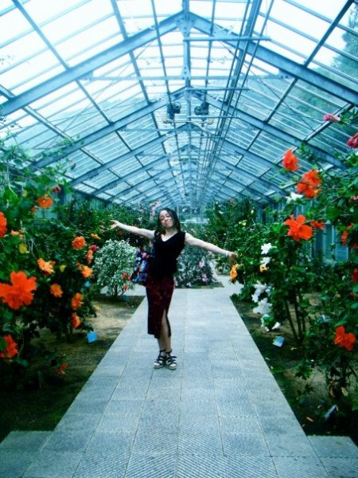
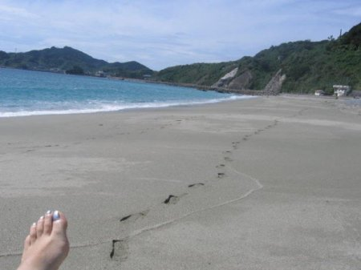

Come explore the Southern Nagasaki Peninsula!
Many people in this prefecture (probably even many locals) are somehow unaware of all the great areas that lay hidden in the Nagasaki Peninsula located directly south of Nagasaki City. Either by car or by city bus you can spend a wonderful day exploring this beautiful, lush peninsula. Below are two of the local hotspots that without a doubt should be included on any visit to the area.
{kind=link}
Nagasaki Botanical Gardens
Are you a fan of beautiful natural surroundings with limited tourist action or human interaction? Then Nagasaki’s Prefectural Subtropical Botanical Gardens (亜熱帯植物園(あねったいしょくぶつえん)) may be the perfect spot for you. Set atop a cliff with a beautiful ocean view, there are acres of outdoor gardens and several indoor greenhouses to explore. It’s the perfect environment for enjoyers of beauteous serenity and seclusion. If you can make it, the annual Sunflower Festival (ひまわり大祭(たいさい)) is from July 19th- August 8th, featuring over 30,000 of the bright basking beauties. (http://anettai.org)

{kind=link}
Wakimisaki Beach
For beach lovers, 脇岬(わきみさき) is perfect for pretending you’ve escaped to your own private island. Beachfront restaurant Zazabea ザザビー has superb, tasty fare (complete with over 30 flavors of soft cream!!!) and an excellent view of the long stretch of sandy beach. Down below you will find rolling waves in which to jump and play. It’s good fun for a sunny day or even great for watching the surfers who come out to play before an impending typhoon.

{kind=link}
To enjoy the botanical gardens: get the #30 bus from Nagasaki Station headed southbound to 植物園（しょくぶつえん）。Get off at the end of the line at the entrance to the Botanical Gardens. For the beach by Zazabea, get the #30 bus southbound from Nagasaki Station to either the gardens or you can ride the ＃３０Kabashima 樺島(かばしま)bus. Just get off at the Wakimisaki kaisuiyokujo mae 脇岬海水浴場前（わきみさきかいすいよくじょうまえ） bus stop.
{kind=link}
-Kitty Marie LaVeaux